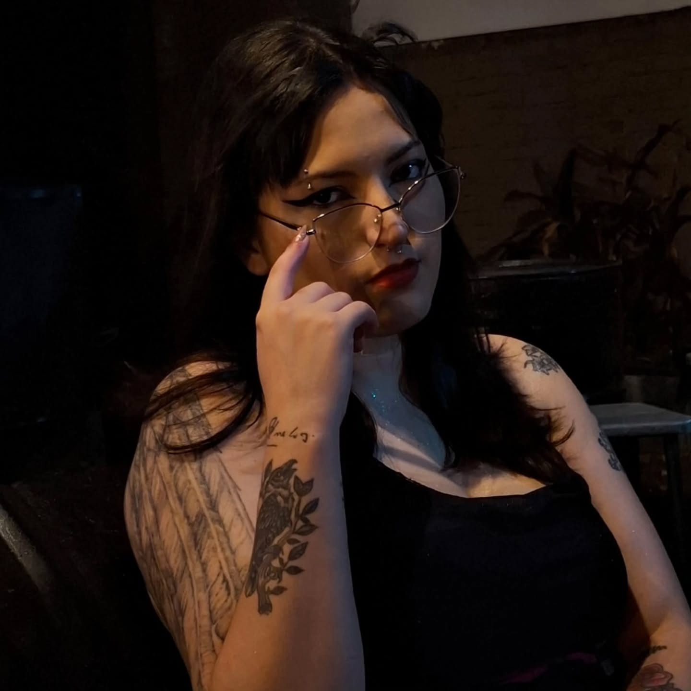

Cargando artículos...
Soy una apasionada por contar historias, crear contenido visual y explorar nuevas ideas. Creé este espacio como un diario digital para compartir mis aprendizajes, proyectos y las pequeñas cosas que me inspiran cada día.
